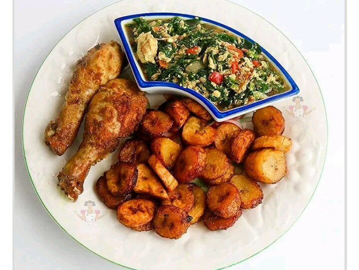

Every tribe has a type of dish popularly known to them, as white soup is accustomed to the igbo tribe, fura d nunu accustomed to the Hausa tribe and also Moi Moi accustomed to the gorbals tribe.
Also each individual from each tribe now their own persopersonal dish (es) as a result of personal choice, as an igbo I might choose not to be the white soup type, but it might be another person'so favorite.
YAM PORRIDGE
Yam porridge is popularly known amongst the yorubas, but the igbos also have their own version. It is just a slight different from the yoruba language. It requires the same methid of cooking, but the igbos have additional ingredient to theirs. Anyways let me take you through this wonderful menu.

A temp image
Real image comingredients soon!!!!
INGREDIENTS
Yam
Blended Pepper
Seasoning
Groundnut/Palm oil
STEPS
Peel the yam.
Add water and cook till it is soft.
Pour the blended pepper.
Add groundnut/palm oil
Add seasoning
Add salt to taste.
Leave to boil for some minutes.
Mash up the yam with the turning stick to have a thick porridge.